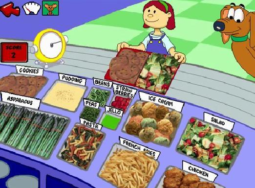

“Please give me [sound of mid 90’s disc reader reading/buffering… it’s indescribable if you’ve never heard it]… one half tray of salad… Please give me… [more brief disc reading noise] one half tray of… Thank you! [loud munching noises]“
JumpStart 1st Grade, Knowledge Adventure, 1995